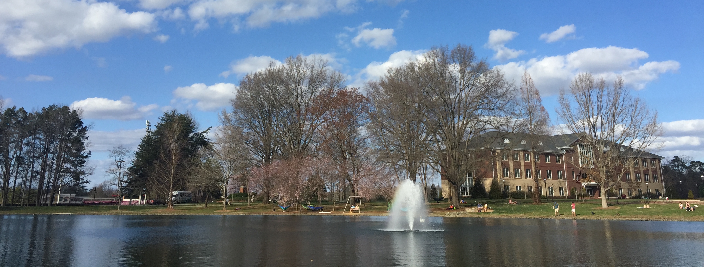
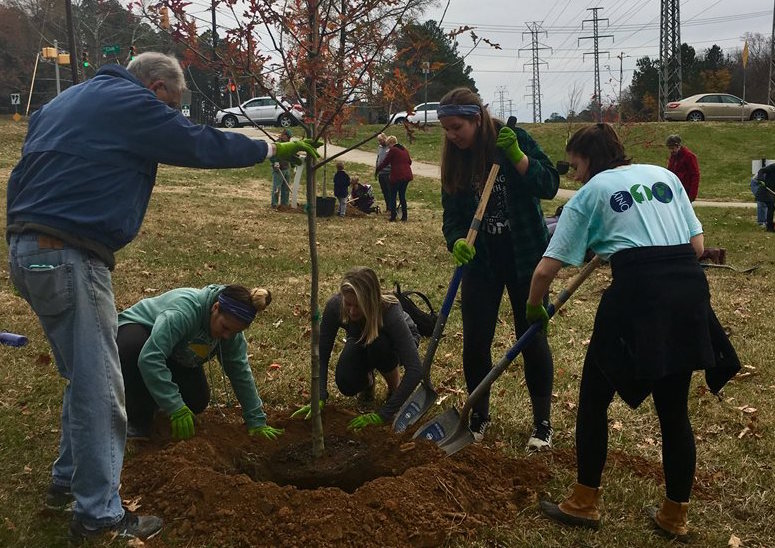
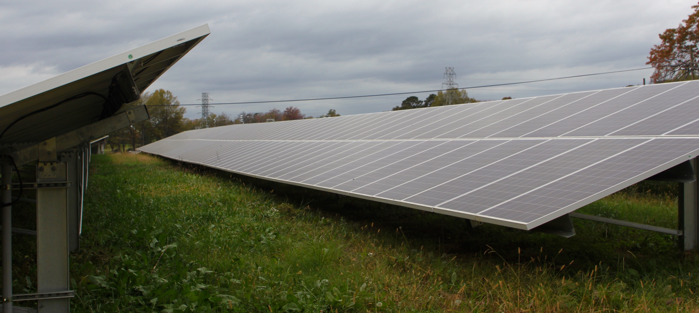

The interior of Loy Farm's greenhouse, used to grow plants for Campus Kitchen.
Elon searches for balance, combatting its growth with sustainable initiatives.
By Michelle Klein
03/01/2018

Sankey Hall, Schar Convocation Center, McEwen Dining Hall, Belk Library, East Residences, Jimmy Powell Tennis Center, South Campus Recreation Center, and a new Historic Commons building. All are buildings currently under construction at Elon. When finished later this year, they will add eight to the more than 30 buildings that have popped up on campus since 2008.
The square footage of Elon’s campus has increased by 47.4 percent just from 2008 to 2017. And there are no signs of the growth stopping, at least not for University Architect Brad Moore.
“The desire is to make sure that we are providing the spaces needed by our students. As we continue to establish and enhance our residential campus, as we have more students on campus we will need more ammenities, that goes hand in hand,” Moore said. "We will continue to be working on projects, but maybe not at the same frantic pace we have been working at the past couple of years."
Elon University Architect Brad Moore talks about building styles at Elon.An upcoming project is the demolition and relocation of Elon Elementary, and building more classrooms, residence halls, and a dining hall in its place. With all the current and future construction on the horizon, Elon will be burdened with increased energy consumption to power these new buildings. As of the 2017 carbon footprint report, energy use is the largest source of Elon’s greenhouse gas (GHG) emissions. This comes primarily from buildings.
Energy consumption accounted for 48 percent of Elon’s total GHG emissions in 2017. But, it has come down from 51 percent in 2016. Emissions per 1,000 square feet has decreased by 25.2 percent thanks to energy conservation efforts, such as LED lighting and efficient mechanical systems. Even so, a lot of square feet have been added, causing net carbon emissions to grow by 10.3 percent from 2008 to 2017. But the culprit isn’t just found in campus buildings – greenhouse gases are raised quite a bit from off-campus travel.
Elon's carbon emission report from 2017 showed energy consumption (48%) and travel (42%), which includes study abroad travel, commuter travel, fuel usage, and directly financed travel, as the biggest carbon spenders. Study abroad was also a big percentage. While overall emissions have increased, emissions per 1,000 square feet decreasedStudy abroad travel accounted for 20 percent of all emissions in 2017, and directly financed travel for faculty and staff business and athletic team travel totaled 8 percent. The switch from the Southern Conference to the Colonial Athletic Association in 2014 certainly didn’t help, since the CAA spans a much wider range up and down the east coast than the SoCon did. Commuting to campus also accounted for 12 percent of all GHG emissions.
All of this was documented in the 2017 Climate Action Plan (CAP) Assessment. It included a projection for future emissions and outlined strategies and goals to reduce carbon emissions from the 2008 baseline year. GHG is measured every year using an online calculator tool that records all carbon emissions and offsets. Director of Sustainability Elaine Durr tracks these changes as she tackles the Sustainability Master Plan’s goal of complete carbon neutrality by 2037.
"We have an amount of emissions, then we have offsets, and so it subtracts to get a net zero amount, ideally that's the goal," Durr says. "As with a lot of campuses, we struggle with the growth of campus and then also trying to work on reducing emissions, so we are working towards that goal."
Elon has been working on reducing carbon emissions since the 1970s with resource conservation. In 2004, President Leo Lambert created the Environmental Advisory Council, which came up with the Sustainability Master Plan in 2007.
According to the CAP, Elon believes one of the most pressing issues facing students is global environmental change. The plan states: “it is imperative for students to understand this change and how they can be good stewards of this earth.” Elon promotes sustainability in all aspects of campus life.


 Source: Elon Sustainability Building Dashboard.
Source: Elon Sustainability Building Dashboard.But sustainability isn’t just about doing what’s best for the environment, according to Durr. It is an equation that actually incorporates three variables: People, Planet, and Prosperity. This translates to doing what’s best for the environment, society and the economy.
Grounds and Landscaping Director Tom Flood agrees with Durr that it’s a delicate balance, and his team tries to be as sustainable as practical for the campus and its needs.
“There are things that we can do slightly differently that might cost us a whole lot more money, and so then we have to ask the question: Is that sustainable?” Flood said.
“Sustainability has all three legs of that triangle. We have to remember that when we talk about sustainability, it’s not just the planet, it’s also the people that are involved and the financial side of it.”— Tom Flood, Director of Grounds and Landscaping, Assistant Director of Physical Plant
Moore says that as a private university with no state funding, Elon needs to make key decisions about where best to invest their money. Risking newly researched green building techniques, like new types of concrete and steel engineered to be lighter and more efficient, could end up costing too much.
“We are addressing the needs as they develop on our campus, and we are trying to do it in a very sustainable way. So I think we have a good balance,” Moore said.
Sophmore Taylor McFadden serves as an Elon student eco-rep. Eco-reps try to further sustainability at Elon by educating their peers and promoting environmental and sustainability projects. For McFadden - who came from Western School of Technology and Environmental Science in Baltimore, Maryland - the focus on sustainability was a contributing reason for her decision to attend Elon.
"I knew I still wanted to carry that interest into college. Even if I didn’t major in Environmental Science, I still wanted to be involved in sustainability," McFadden said.
McFadden says this year they are trying to get more students to think about waste reduction, composting and recyling practices. While many compostable products are already used by dining facilities, like food containers and to-go boxes, McFadden says it comes down to the students.
"Students play a huge part in how sustainable Elon really is, because we have all these initiatives and resources available for students to be sustainable, but it doesn’t actually work if students don’t use it," McFadden said. "With the composting to-go boxes, a lot of students use them but a lot of times we are seeing them in the trash and students don’t find it convenient to throw it in a compost bin or to sort their trash to see what goes in each bin."
While sustainability drew McFadden in, Elon attracts many other students for its robust study abroad program. Even with the high carbon costs, study abroad travel is not something Elon will ever get rid of, according to Elaine Durr.
"It is probably going to increase, and so how do we mitigate that, how do we increase education and awareness among the student body, and what are our avenues for offsetting [carbon emissions]. So that's what we are looking at," Durr said.
Director of Sustainability Elaine Durr talks about the importance of the three "P"s of sustainability.Elon wants to grow and bring in more students, but this comes at a price. Still, Elon has launched plenty of sustainable initiatives, and hopes to launch more as they become better options and garner better returns on investment.
First, Elon uses Leadership in Energy and Environmental Design certifications for its buildings, and closely monitors the power consumed by each building. The LEED program has four tiers of building rankings, based on how much energy they use and other sustainable factors. Elon has 27 LEED certified buildings. According to Durr, Elon is similar to other institutions in targeting Silver as the standard. There is nine Gold buildings, including Lindner Hall, and a couple of LEED-For-Homes Platinum certified houses in the Loy Neighborhood. A LEED building has to be a certain percentage more efficient than a building that meets a standard energy code.
Elon Sustainability's website has a Building Dashboard that shows daily energy consumption for different buildings, including residential buildings, dining facilities, athletic facilities, and academic buildings.
 Source: Elon Sustainability Building Dashboard. Elon's online building dashboard shows daily energy consumption from campus buildings
Source: Elon Sustainability Building Dashboard. Elon's online building dashboard shows daily energy consumption from campus buildings
Even though the new buildings at Elon are meant to blend in seamlessly with the historic Georgian style buildings constructed in the 1900s, they are constructed to be more energy-efficient, keeping brick, a sustainable and durable local resource, as the envelope.
Environmental Studies Professor Robert Charest says that he doesn't like how Elon's campus looks like it was all built in 1875. He thinks Elon could be construcing better buildings that are more energy efficient, if it loses the idea of trying to maintain the homogeneous historic look.
"I think we should be doing better than LEED certification, which just gives bragging rights, we should be trying to do more..." Charest said.
Environmental Studies Professor Robert Charest talks about his thoughts on Elon's brick buildings.However, Moore says that to achieve the Silver rating, costs of building go up about three to five percent. According to Flood, it is in the university’s best interest to spend their energy wisely. He says energy right now is relatively cheap, but over time it is inevitable that the costs are going to go up.
“It’s just the right thing to do, so it makes sense sustainably for the environment and for the economics to be good stewards of those resources. Use as little energy as possible,” Flood said.
In terms of grounds maintenance, Flood cites many sustainable practices. Grounds staff practices Integrated Pest Management, a system that determines when and how to deal with any multitude of pest with the least invasive, most sustainable methods. Up to 90 percent of irrigation water, used to water Elon’s grounds, is reclaimed water runoff taken from ponds around campus.
“Those ponds exist because storm drains feed into them, so every time it rains they get filled and refilled,” Flood said. “We are simply recycling a lot of that water.”
Lake Mary Nell is just one of the ponds on campus that receives rain water and water runoff.LED lights have been installed in almost all sidewalk lamps, yard waste is composted and returned back to the campus in landscape projects, and grounds maintenance crews try to avoid herbicides and minimize the amount of fertilizer used. Because of these efforts, according to Flood, Elon is able to maintain more acres of land per person at less than the average cost. This is compared with Elon’s peers and aspiration institutions, which include Wake Forest, Emory, Furman, Vanderbilt and Boston College.
A new project that has just been announced, but has been in the works for the past three years, is the Energy Conservation in Action plan. Physical Plant has been adding meters and controls to most of the buildings on campus, so that air conditioning and lighting could be easily controlled and monitored. The control system will be able to tighten the energy use in each building, and sometimes even each room. It will be synced with a reservation system that will make sure the room is at a comfortable temperature for the span of the reservation time before going back into sleep mode.
“This pilot program is giving us some data on how this is working, what issues we are going to run into, and how much will we will be able to save in energy costs,” Flood said.
The pilot buildings include Schar Hall, Koury Business Center, Lindner Hall, Long Hall, Steers Pavilion, Belk Pavilion, the Carl Woods Center, Harden CLub Sports, Holt Chapel, and The Lighthouse.
Other initiatives to save on energy use include tree plantings. In February, Elon students helped plant 100 trees in Greensboro's Price Park as a way to offset Elon's carbon emissions. In addition, Elon has increased dining composting and local and organic purchasing. Loy Farm, which was bought in 2000, but used mostly for storage until 2011, when the AgroEcology program introduced students to opportunities for sustainable engagement.

Charest and Durr agree that Loy Farm is a true example of sustainability in all areas. Charest helped found Loy Farm and the sustainable architecture department located on the premises. The Grow Biointensive program is an organic method of sustainable food system production, focused on proper dieting. The food harvested by student volunteers is mostly used by Elon’s Campus Kitchen to make meals for Allied Churches, which provides resources for the hungry and homeless in Alamance County.
Additionally, Charest wants the area to serve as a living learning community. But instead of a hall of dorms, this LLC will be housed in tiny homes. Charest says he has developed a model for a building code compliant and zoning compliant tiny home community, and hopes that his idea comes to fruition in the next three to five years.
“The next step would be to try to implement it here at Elon, to see how it would work out at the Loy Farm, I think that would marvelous if we could do that,” Charest said.
With these initiatives already underway, Elon hopes to reduce its carbon footprint, even as campus continues to grow.
As of 2017, Elon was not listed on The Princeton Review’s list of the top 50 Green Colleges, although it was included in its list of 375 Green Colleges. This ranking deals mostly with student perceptions about sustainability on their campus, but it also takes into account data from the Sustainability Tracking, Assessment and Rating System, or STARS report. The system is a transparent, self-reporting framework for colleges and universities to measure their sustainability performance..
The STARS report, however, ranks 327 institutions based on specific data about academics, engagement, operations, planning and administration and innovation. A Platinum score is acheived with 85 points. A Gold score needs 65, Silver needs 50, and Bronze needs 25. Elon received the Silver ranking with a score of 50.16 in its most recent submitted report in 2015. Three schools scored Platinum, the highest, and 93 scored Gold, including other North Carolina programs like Appalachian State University, NC State, UNC Chapel Hill, and UNC Greensboro. Elon shares the Silver rating with 152 other schools. Furman University, a school on Elon's list of peer and aspiration institutions, also scored gold.
From the STARS report data, Elon did extremely well in the coordination, planning, and governance category, meeting 7.3 out of the eight objectives. It also received fair scores for diversity and affordability, public engagement, campus engagement, and research. However, Elon only scored .39 out of 7 points for investment, and received zero points for innovation. It also scored poorly compared to other institutions in dining, buildings, and water operations.
Durr, who submitted the report in 2015, is in the process of submitting a new report. According to Durr, Elon will qualify for all four points in innovation in the new report. Durr says that the updated report will also have better scores for dining due to more local and community-based and/or third-party certified food and beverage purchasing.
Compared to Furman University a peer school in South Carolina, who is ranked Gold in the STARS report, Elon has many categories to improve in.
Other schools are hard to compare to, because every institution has a different formula for sustainability. The environment is different, the economic costs are different, and the social fabric is different. But Charest, who thinks Elon can be doing more in terms of environmental sustainability, still describes Elon as a responsible institution.
"Responsibility is more than just sustainability. Responsibility is a much broader umbrella of factors to take into consideration. One of them is the financials of a project and not just designing houses built out of cornstarch that will biodegrade in 30 years," Charest said. "There's the financial health of the project, and of the environment, and the context. We also have to look at the health and wellfare of the people affected."
He says Elon does a great job at mediating between all the different factors, and Moore agrees.
"I think we have a pretty good balance of meeting the needs of the community, but also doing it in a very sustainable way." Moore said.
In December 2017, Elon students helped plant over 100 trees along the Greensboro Greenway as a way to offset Elon's carbon emissions. Photo courtesy of Office of Sustainability.Flood, who will become director of Physical Plant in June, says there is always room for improvement, and there are many green energy options Elon is exploring for the future, but right now they are not sustainable options.
One example is organic composted fertilizer. Elon can't make its own, and to get it, Physical Plant would have to order four times as much, at four times the price, and the closest location it would be trucked from is Ohio or Vermont. This brings up questions of truck fuel generating far more emissions than the synthetic fertilizer Elon currently uses only twice a year. If better and cheaper options were to become available, Flood says, he can see a switch in the future.
Solar projects also cost a money, even if it is a good energy-saving investment. West Front Street ruins Elon's chances of getting solar energy from Loy Farm's solar field. Only a utility company, like Duke Energy, can lay a powerline across a road. If Elon is able to fund another solar field closer to campus, it would require removing trees.
Energy from Loy Farm's solar field cannot be used on campus because Elon can't cross power over or under a road."It can be argued from a carbon perspective that that's worth doing, but nobody wants to take down trees. That's something we continue to look at, what makes sense in the end game? It may very well be that we have to remove woods to add solar fields, but it's counterintuitive," Flood said.
An aggregation project is only just beginning to be explored as an option for Elon. An aggregation project would combine Elon's purchasing power with other universities to buy green energy as a consortium, Flood says.
Once the new STARS report is approved later this year, Durr, Flood, and other staff will be able to make better comparisons and discover other ways to combat the extra energy coming from Elon's blooming campus.
{kind=link}